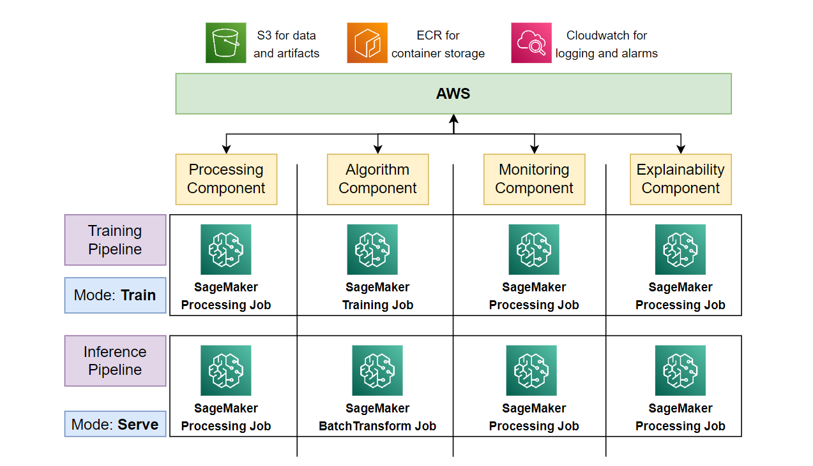
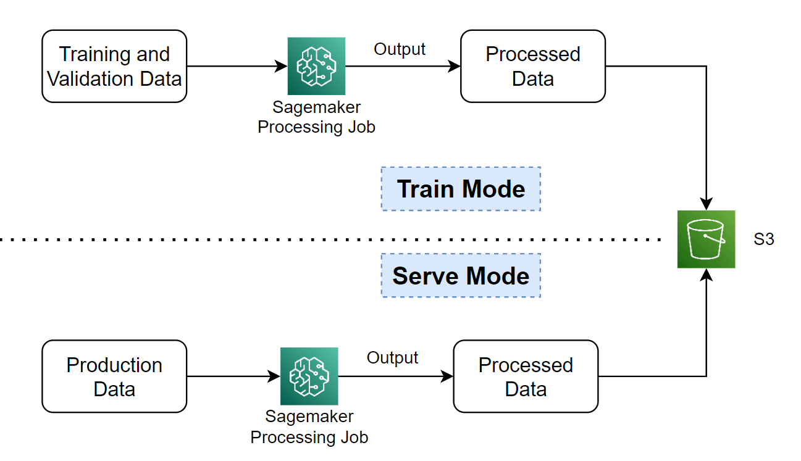
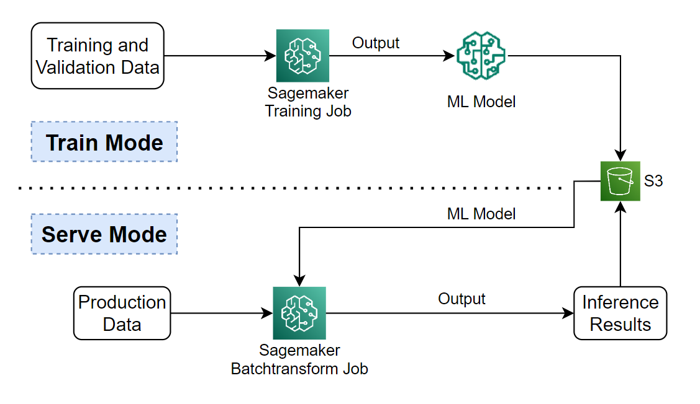
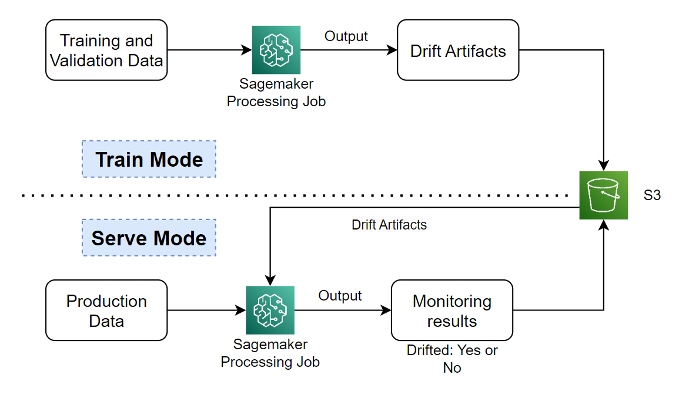
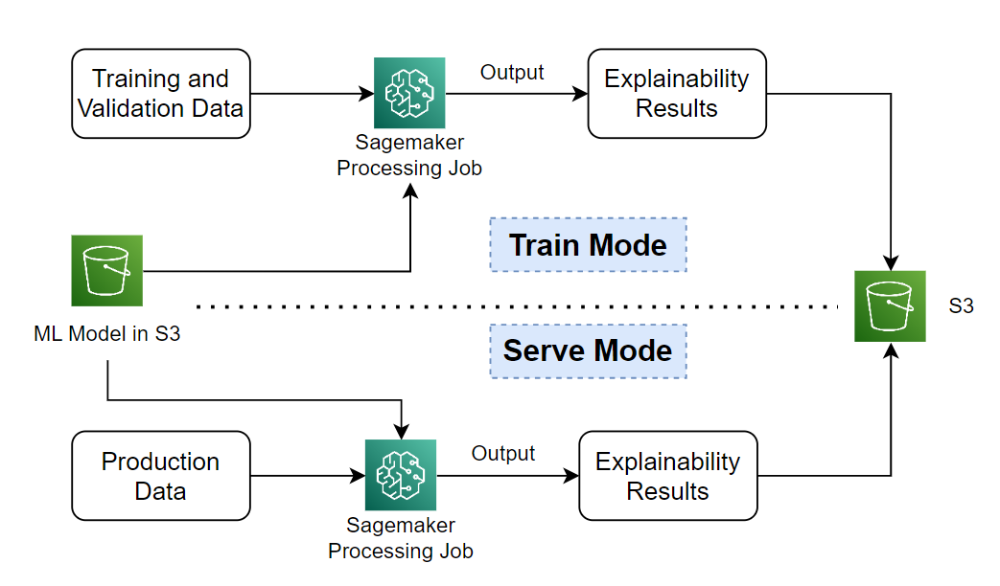

End-to-End MLOPS on AWS: Part3 - Computer Vision Components Deep Dive #
| Authors: Palash Nimodia , Yogendra Yatnalkar |
| Last Edited: 20/06/2023 |
| Previous Blog Link: E2E MLOps on AWS: P2 - Computer Vision Simulation with Drift & Retraining |
In our previous blog (part 2), we saw a high level overview of an MLOps system for large-scale image classification, end-to-end simulation and retraining evaluation to tackle drift. In this part 3 of our series, we will explore the computer vision components in detail: how we developed them for batch workloads and how we built them on AWS using SageMaker.
|  |
|---|
| Component Mode and SageMaker Service |
Quick Recap: #
A component is an independent ML functionality or an ML operation which is a part of the larger process. A pipeline is a workflow which constitutes one or more components that execute a holistic task.
There are 4 components as seen from image above, where each component has 2 modes, which are:
- Train mode and Serve mode.
Each component mode will be executed with any one of the following Sagemaker Job which are:
- SageMaker Training Job or
- SageMaker Processing Job or
- SageMaker BatchTransform Job
As discussed in part1 of our blog, all the sagemaker workloads are developed using docker containers (BYOC - Bring Your Own Container).
Components in detail: #
1. Processing Component: #
The processing component handles batch processing of large amounts of image data, using various data augmentation techniques. The batch-processing is usually performed before model training and inference.
|  |
|---|
| Processing Component Lifecycle |
On AWS, the processing component will be built using Amazon Sagemaker Processing Jobs (link) . On completion of the SageMaker Processing job, the output processed data in saved back in AWS S3.
In the train mode, the processing job will transform train and validation data and in the serve mode, it will transform the production images.
2. Algorithm Component: #
The algorithm component performs 2 major tasks, which are model training and model inference.
|  |
|---|
| Algorithm Component Lifecycle |
Unlike processing component, the 2 modes of algorithm component will perform completely different tasks.
-
The train mode will perform the task of ML model training on the training-dataset and computing the evaluation metric on the validation-dataset. Based on the ML model used, the train mode will also support model retraining capabilities. On AWS, the train mode of the algorithm component will be implemented using Sagemaker Training Job .
-
In serve mode, the production data is fed into the trained ML model for prediction. This model is the same one that was trained in train mode. On AWS, the serve mode of the algorithm component will be implemented using Sagemaker BatchTransform Job .
The data input to the algorithm component is processed train, validation or production data that are the outputs of the processing component.
3. Monitoring Component: #
Model monitoring refers to the process of closely tracking the performance of machine learning models in production. It enables us to detect any technical or performance issues, but mainly it is used to detect drift. There are two main types of drift:
- Data drift: Drift when characteristics of the underlying data on which the model has trained changes over time.
- Concept Drift: Concept drift occurs when the characteristics of the target variable and its relationship with the training variables itself changes overtime.
|  |
|---|
| Monitoring Component Lifecycle |
On AWS, both the train and serve mode of the monitoring component are developed using SageMaker Processing Job.
- In the train mode, the processing job learns the training images data distribution and saves it in a file which is also known as drift detection artifacts.
- In the serve mode, using the drift artifacts from the train mode, drift is identified on the production data.
The data input to the monitoring component is usually the raw data itself, as augmentations performed by the processing component might change the input data distribution.
4. Explainability Component: #
As the name suggests, the explainability component is used to understand the model interpretability and cause of its inference decision behind every inferred data sample. In any production MLOps system, explainable AI is very important as it adds accountability and compliance to our production system.
|  |
|---|
| Explainability Component Lifecycle |
On AWS, both the train and serve mode of the explainability component are developed using SageMaker Processing Job.
The data input to the explainability component is processed train, validation or production data which are the outputs of the processing component.
The second input during both the modes of the processing job is the trained ML model itself, which is the output of the algorithm component train mode.
In our case of CV image classification, the explainability component computes the integrated gradients for each data sample, from the production data in serve mode and training data in train mode using the trained classification model.
The END #
We hope that you found this blog informative and useful. To summarize, we started our blog with a short summary of our previous blogs and later dived into details of each component individually. We saw how each component is developed on AWS and what are the inputs required to run the same.
Please provide us your valuable feedback and stay tuned. The code for the component development on AWS will be released soon....